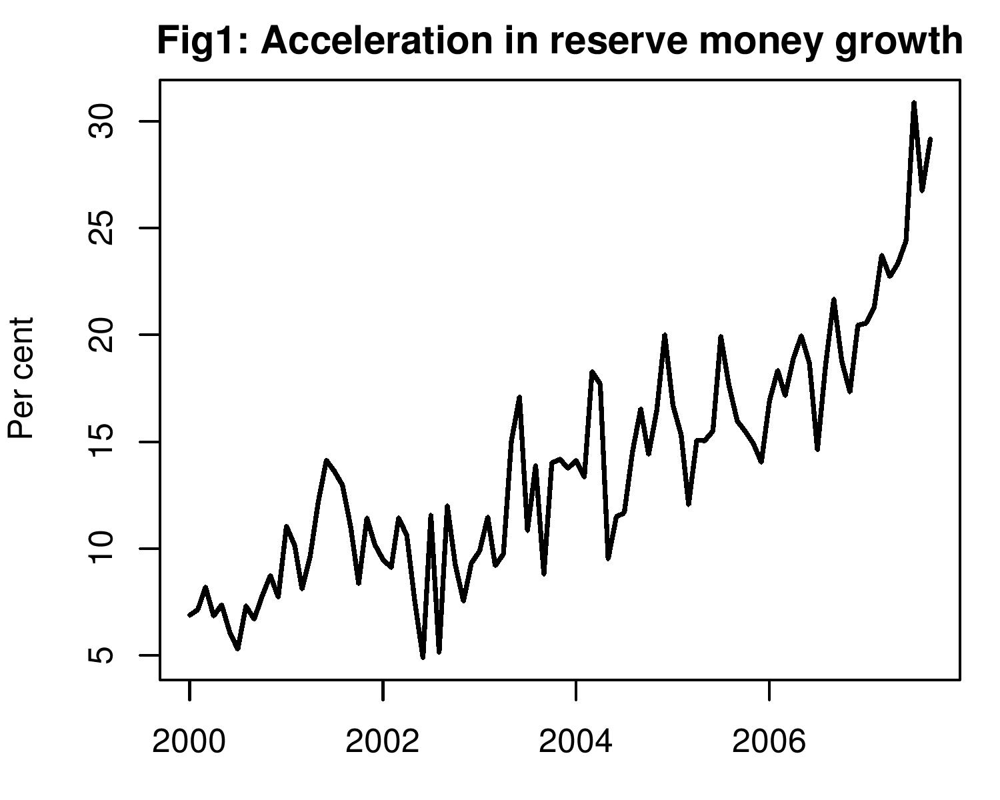

The fuss about credit policy
Indian Express, 30 October 2007
The monetary policy announcement for the coming quarter will take place amidst great confusion about what RBI is trying to achieve. Going by the WPI, inflation is under control, and it looks like there is no difficulty. But going by the more important CPI, because that is what affects households, inflation has risen above 7% and needs to be urgently restricted. RBI could eloquently preach the case for tightening monetary policy to combat the CPI, or it could point to the WPI and do nothing. But if RBI were honest, it would admit that as long as it has to focus on the rupee dollar rate it has little autonomous decision making power on monetary policy.
The backdrop of the coming credit policy announcement is large-scale dollar purchase by the RBI. On some days, RBI is reputed to be purchasing as much as $1 billion on a single day. This pumps rupees into the market. This induces a loose monetary policy, which is inflationary in the long run.
To prevent inflation, there is a continued attempt at `sterilisation' through which the rupees injected by RBI when trading on the currency market are taken out of the system. The research literature has, however, amply demonstrated that sterilisation is not a long-term answer. It can help for a few weeks or at most a few months. After that, sterilisation is a self-defeating and futile process because it raises domestic interest rates and that contiues to attract capital.
WPI inflation has been kept in check, largely because WPI has a large weightage for traded goods, where rupee appreciation puts a control on prices. When the rupee-dollar rate goes from Rs.44 to Rs.40, steel prices in India drop by 10%. These traded commodities have a high weightage in the WPI. In additon, fuel prices have not been allowed to go up. Hence, WPI inflation control looks impressive. But CPI inflation, that has a smaller component of traded goods has seen prices rise much faster with the growth in money supply. As Figure 1 shows reserve money has been sharply accelerating in recent months.
Restricting inflation requires tight monetary policy. But would raising the cash reserve ratio (CRR), or the repo or reverse repo rates mean that monetary policy will be tightened and that consumer price inflation is going to come under control? Unlikely. As long as the RBI remains focused on preventing rupee appreciation and keeps buying dollars in the forex market, it continues to pump in liquidity into the economy. Measures to pull out this liquidity like sale of MSS or raising the CRR might look like the RBI is tightening monetary policy, but what it gives with one hand it takes away with the other. Moreover, higher interest rates attract even more inflows.
The only way to genuinely try to control consumer price inflation and tighen monetary policy will be for the RBI to stay away from the foreign exchange market. Not merely for a few days, but to continue to stay away when higher interest rates attract greater capital flows. But today neither the government not the RBI are in a mood to let the rupee appreciate further. This really means that even if the RBI announces that it is tightening policy in the coming monetary policy announcement, it will not effectively do so.
What if RBI decides to move in the opposite direction and loosen monetary policy? The rationale for doing so is also sound. After the US Fed cut rates, capital flows into India have led to a huge pressure on the rupee to appreciate. If the focus of policy is going to continue being the rupee dollar rate, then it makes sense to reduce interest rates thereby reducing the interest differential with the US. If this is not done, either the rupee will appreciate, or the dollar purchases will increase liquidity and inflation. Arguing that the WPI is under control and credit growth is under control, that there could be job losses in textiles and leather, the RBI could cut rates and bring down bank lending rates. Strangely enough the impact of loose monetary policy may be to reduce money supply growth as RBI could be buying less dollars in the forex market. Monetary policy may be tighter than if the RBI merely pretends to tighten and continues to buy up dollars in the market and make the market flush with liquidity.
In summary, as long as the rupee is a peg to the dollar, the RBI might as well stop pretending that it has a monetary policy. Capital inflows cannot be controlled in modern India. This implies that we can either have a pegged exchange rate, or an independent monetary policy, and not both. As long as there is an exchange rate peg in operation, there is no point doing a big drama over quarterly monetary policy announcements.
In reality, there is no control of monetary policy to speak of. The actual monetary policy is being acted out on a day to day basis in RBI's market manipulation of the currency market market. If any announcments are to be made, for the purpose of better communication with the private sector, they should concern RBI's currency trading. RBI should put up its currency trading data on its website everyday. The market will be much better informed as a result. The real monetary policy is in RBI's currency trading, so the real transparency of monetary policy lies in making RBI's trading information public. The pomp and drama of a credit policy announcement can be safely dispensed with.
Back up to Ila Patnaik's media page
Back up to Ila Patnaik's home page